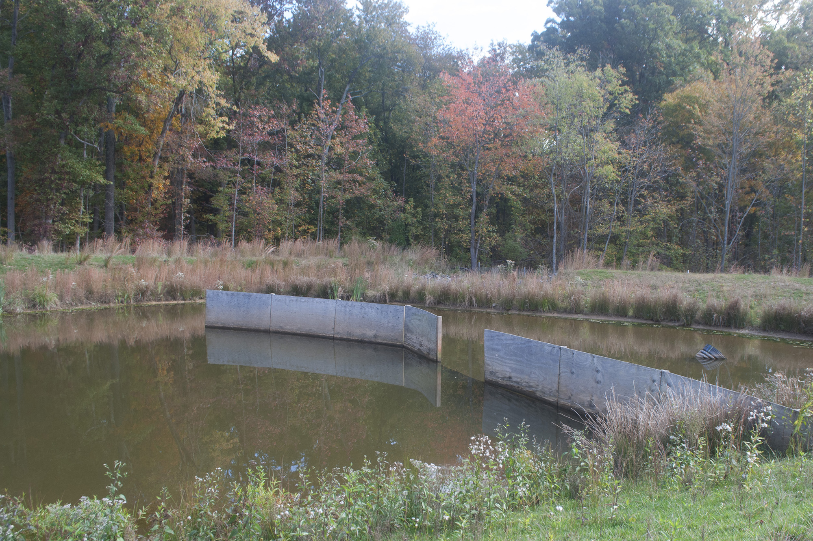

Cipher Cities
Notes from the National Business Park

At the headquarters of the National Security Agency in Fort Meade, Maryland, there is a small park dedicated to the “silent warriors” of airborne signals intelligence. Three previously classified models of planes stand in counterpoint to Crypto City. Signs in front of the planes explain appropriate photography one is allowed to take—and illustrate the kind of photo one isn’t allowed to take.
As I looked at this image of an image I couldn’t capture, I wondered if this was why, when searching for a visual for the NSA, the media frequently uses the same photo vaguely reminiscent of the kabaa. Perhaps rather than journalistic laziness it is a matter of limited options.
In the empty Vigilance Park I considered snagging a quick shot, but I didn’t want to risk confiscation of my camera that early in the day. I hadn’t come to visit the NSA anyway—this was a detour. I’d come to visit a place far less blatantly sinister.
The National Business Park is an office complex located less than a mile away from the NSA headquarters. Its tenants are, mostly, intelligence and defense contractors. While the NSA and other intelligence agencies have been subject to more public scrutiny following revelations about the surveillance state, contractors are crucial to maintaining it–they design and build software and hardware, provide analysis, and build physical structures for the intelligence community. According to author Tim Shorrock, contracting makes up about 70% of the defense intelligence budget.
Between 2002 and 2006, 1,102,940 square feet of office space in 8 new buildings were added to the National Business Park. 2002 was the same year that the NSA began the notoriously expensive Project Trailblazer, involving SAIC, Boeing, Computer Sciences Corporation (CSC), and Booz Allen Hamilton. In 2001, CSC and Northrop Grumman had been awarded a joint contract from the NSA to work on Project Groundbreaker, another boondoggle that involved subcontracting to, among others, General Dynamics, BAE Systems, Titan Corp. (now L-3 Communications), CACI International, and Lockheed Martin.
Between 2006 and 2013, 9 new buildings and 1,142,023 square feet of office space were added to the NBP. In that time, Trailblazer was shut down after whistleblower Thomas Drake leaked documents about the program to the press. Drake faced prosecution from the U.S. government under the Espionage Act for his whistleblowing. In 2009, Project Groundbreaker’s contract was renewed through 2014. Between 2006 and 2013, the government budget for intelligence went up by 25%.
Visiting the National Business Park admittedly offers little insight into hard, technical facts of the surveillance state. Studying the facades of the intelligence industry is more an investigation of ethics by way of aesthetics. In order to understand a world in which one assumes she is being watched, it seemed necessary to face the apparatuses of watching–to see and be seen in an explicit, literal way, not just as more metadata but as a corporeal creature. Searching for a face to, well, face among the temples of the surveillance state proved more difficult than imagined.
The National Business Park is one of many properties belonging to Corporate Office Properties Trust, a publicly traded Real Estate Investment Trust (REIT) based in Columbia, Maryland. COPT traces its origins to a Minneapolis REIT named Royale Investments, founded in 1988. In 1998, the company merged with Constellation Real Estate Group, a fully-owned subsidiary of Constellation Energy. This merger led to the acquisition of 1.6 million square feet of mid-Atlantic office property, a new name, and a shift in business priorities.
COPT describes itself as “serving the specialized requirements of U.S. Government agencies and defense contractors engaged in defense information technology and national security-related activities.” Looking at where COPT owns properties is an easy way to identify nodes in the U.S. intelligence-industrial complex. For example, they own properties in San Antonio, Texas (a stone’s throw from the National Cryptologic Center) and Colorado Springs, Colorado (just up the road from NORTHCOM). While there are, of course, other real estate companies working in this niche, COPT is seemingly the only one explicitly and almost exclusively dedicating itself to this market.
For researchers of defense contractors, NBP is a bit of a mecca–or, at least, a clever narrative device used in books and articles. Less is written about COPT. Press releases about new buildings will mention ”a new strategic tenant”, nothing else. At times, COPT claims to not always know who its tenants are.
Right on the border of Fort Meade, the National Business Park is located in Annapolis Junction, an unincorporated community in Anne Arundel County. “Community” is perhaps a generous definition. Annapolis Junction is a cipher of a place–named in 1840 for a rail junction on the B&O Railroad, the government repurposed most of the surrounding land to create Fort Meade in 1917. Industrial facilities, offices, the CSX rail line, and Fort Meade make up the majority of its “community.” To call it liminal would imply a potentiality that it does not have. It is merely there.
While the NSA is a notable neighbor, the NPB is also about 3 miles away from what used to be a state prison in Jessup. The Maryland House of Corrections, also known as “The Cut”, was notorious for its poor conditions and history of violence. It closed abruptly in 2007, and torn down in 2012. The Maryland Correctional Institute for Women, the only women’s prison in the entire state, still operates near the former House Of Corrections, as does the minimum security Brockbridge Center.
The U.S. Federal Bureau of Prisons has its mid-Atlantic regional office in the National Business Park, sharing space with small-to-midlevel contractors like Scitor, G2, Invertix (recently rebranded as Altamira), and Ventura Solutions.
I mention this not to elucidate a larger point but to acknowledge one that remains inchoate yet inescapable. The physical geography of the intelligence-industrial complex overlapping with that of the prison-industrial complex is a matter of resonance, not collusion.
Before actually going to the National Business Park, I went there remotely on Google Streetview. Panning and scrolling the parkway offered some insight, but some streets were not included. I also emailed the National Business Park’s property manager Bill Barroll to see if he was available for an interview. Another COPT employee responsed, asking for all questions in advance and where I planned to publish, as a board needed to decide if this was an “opportunity” they wanted to take. After submitting my 4 fairly vanilla questions, several more requests were made (another method of contact beyond email, a draft in advance of publication). Apparently, COPT would happily work with me if it served their needs. I abandoned the correspondence.
Actually arriving at the NBP induced intense deja vu—not for the lived experience, but the simulation of it. The landscapes I’d paused and panned through on Google Streetview now appeared through the cinematizing screen of a car window. In the distracted euphoria of finally seeing that Booz Allen Hamilton office for real, I couldn’t bring myself to stop and park. I drove to the end of the parkway, home to three newer buildings.

In Google Satellite, the buildings at the edge of the National Business Park don’t exist. A real estate broker’s portfolio site indicated that 410 was home to Lockheed Martin offices, which are apparently completed and in use. The interior of 420 was still under construction. Apparently, it is the future home of SGI Federal.
In the parallel narrative I began to construct, COPT’s cageiness about discussing its art collection was because it was actually a series of altars for the hidden ancient cults that in fact ruled their properties. I walked along the parkway to a fetid pond and an abstract sculpture. Neither the altar, nor the ducks in the pond, seemed to get many visitors. They offered no insight into the secrets of these temples.
Rambling topography and highly curated foliage meant that getting a direct view of buildings was almost impossible without higher elevation or getting close. I didn’t know how close I could get without drawing attention to myself. Not that it was clear I was doing anything wrong per se, or how much more I’d learn from going up close beyond what I could learn from the photographs on COPT’s website. Beneath bland exteriors lay more bland copper and drywall, security blanketed in banality.
It became clear why some of the NBP was not part of Street View–they were mostly restricted areas. Apparently the higher the level of restriction at a site, the more likely the tenant was the U.S. government. I didn’t even try to shoot pictures of the barricades and ID booth at Hercules Road, the path to NBP-1, a building rented by the NSA’s Technology and Sytems Organization where it has been since 1996.
Similarly, while Sentinel Drive was accessible, Sentinel Way required proper ID and credentials. Past press releases and research suggest they are mostly government offices, including the Department of the Navy’s Center for Information Dominance.
From Hercules Road I ventured to Technology Drive, a name for a street that no one would ever have a childhood on. Office parks are fond of these buzzword-heavy addresses–Innovation Road, New Allegiance Drive. There were some strangely quaint street names in NBP as well, presumably references to the farms that may have once been there–the sculpture garden by the Lockheed Martin office featured a plaque explaining the land used to be the “Trusty Friend Farm”, established in 1829 by Amos Clark, preserved as farmland until 1989.
On the 2701 Technology Drive compound, I entered a median courtyard with yet another sculpture. This one was a circle formed by three curving stalks meandering toward the sky. I stood in its center and looked up. Maybe if I knew the correct incantations, the correct syntax, I might be able to activate the sculpture and reveal its true purpose.

I thought about Robert Smithson’s Entropy and the New Monuments: “They are not built for the ages, but rather against the ages. They are involved in a systematic reduction of time down to fractions of seconds, rather than in representing the long space of centuries. Both past and future are placed into an objective present.” The buildings were sleeping giants that should be approached with great caution. The buildings were bland temples to the many demigods of an infinitely complicated cult. The buildings were buildings, decked in surveillance cameras and filled with humans, doing their jobs.
Sentinel Drive was the only publicly accessible area beyond Street View’s confines. There, mostly vacant parking garages slouched obstinately. This overwhelming presence of absence was made more obscene by the fact NBP has “overflow parking” on the NSA grounds less than a mile away (accessed via Technology Drive, which takes the name “Connector Road” as it enters Fort Meade ). I drove into one of the parking garages, to the top level, to see if I could get a better vantage point. Trees obscured cars zipping along Connector Drive to the NSA. NBP-1 loomed over the compound.
Outside one of Booz Allen’s offices at 304 Sentinel Drive, a man driving a pickup truck with the COPT logo told me I couldn’t take photos. I asked if I could photograph the sculptures. “As long as you can’t see the buildings,” he said. I was doubtful that I’d actually be stopped from photographing more, but still went back to my rental car and, in a paranoid flourish, hid my camera’s memory card.
In part, it is this dynamic–of uncertainty as to whether you are being observed, and whether you will be punished for your actions, whether or not they actually pose a danger to anyone–that gives surveillance its power. Photographs of boring architecture in an office park in Maryland and maps of boring office parks in Maryland aren’t especially tactically valuable. The only reason to deny anyone the right to take photographs of the National Business Park or the NSA or any apparatus connected to the Intelligence Community is to maintain a false mystique around it.
This is but one among many manicured landscapes of the intelligence industry. It presents a surface, smooth and menacing like a human face with no features. But someone had to build that surface, someone has to maintain and manicure it, someone has to tether the sad sapling trees on the medians. Through its banal manicured landscape, its vacuous monuments, and insistence on image control, the National Business Park creates a landscape that denies any rational past, a landscape for a world beyond not only the politics of the day but also the accountability of history.
As I left the National Business Park, I thought again of Smithson. “It seems that beyond the barrier, there are only more barriers.” I’d gone to the outskirts of Crypto City and found only ciphers.